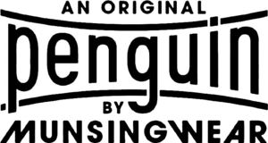

Trade Mark Journal No.2025/012 21 March 2025
WO0000001830499 (3,9,14,18,24,25,35)
Office of origin: United States of America
Date of International Registration:30 July 2024
Date of designation in the UK:
30 July 2024

The mark consists of the wording "AN ORIGINAL PENGUIN BY MUNSINGWEAR" in stylized form with the word "PENGUIN" between two curved horizontal lines.
International priority date claimed: 27 February 2024
(United States of America)
(98424080)
- Class 3
- Fragrances, namely, perfumes, eau de parfum, cologne, eau de toilet, body lotion, bath lotion, bath gel, hand soap, perfumed soap and cosmetics.
- Class 9
- Eyewear and eyewear accessories, namely, frames for prescription and non-prescription eyeglasses and sunglasses, prescription and non-prescription sunglasses, eyeglass and sunglass chains, eyeglass and sunglass lenses, and cases for all the aforementioned goods; downloadable virtual goods, namely, computer programs featuring footwear, clothing, headwear, eyewear, bags, sports bags, sports equipment, and accessories in the nature of scarves, jewelry, hosiery, belts, and ties for use in online virtual worlds; carrying cases specially adapted for electronic equipment, namely, mobile phones, smart phones and tablet computers, headphones, ear buds and computer stylus.
- Class 14
- Watches; clocks; parts of watches and clocks; jewelry, namely, rings, bracelets, necklaces, cufflinks, and tie bars; cases for the aforementioned goods.
- Class 18
- Luggage; luggage straps; travel bags; garment bags and shoe bags for travel; briefcases; briefcase-type portfolios; attaché cases; messenger bags; handbags; pocketbooks; leather and fabric evening bags; clutches; tote bags; athletic bags; duffel bags; beach bags; diaper bags; cosmetic bags sold empty; toiletry cases sold empty; school bags; knapsacks; waist packs; umbrellas; wallets; billfolds; business card cases; credit card cases; key cases; change purses.
- Class 24
- Towels; facecloths; shower curtains; pillowcases; bed sheets; bed blankets; comforters; comforter cases; bedspreads; pillow shams; dust ruffles; duvet covers; daybed covers; bed skirts; fabric window treatments in the nature of curtains, draperies, valances, and curtain holders; tablecloths not made of paper; textile napkins; tapestry style ornamental wall hangings made of textile; quilts in the nature of ornamental wall hangings; fabric sold by the yard for use in making curtains, drapes and upholstery; mattress covers; bed sheets; traveling blankets.
- Class 25
- Clothing, namely, tops, shirts, t-shirts, sweatshirts, tank tops, pants, shorts, walking shorts, jeans, slacks, and skirts; clothing, namely, outerwear in the nature of wind-resistant jackets, jackets, coats, vests, pants, shorts, sweaters; headwear, namely, hats, caps, visors and headbands; footwear, namely, shoes, sneakers, flip flops, and sandals; ties; bowties; wristbands; belts for clothing; swimwear; hosiery; socks; golf shirts; polo shirts; sport shirts; dress shirts; tuxedo shirts; underwear; sleepwear; loungewear; pajamas; robes; hosiery; scarves; gloves; sleepwear; suits; wristbands as clothing.
- Class 35
- Retail store services in connection with the sale of leather shoes, leather boots, leather sandals, clothing of leather, leather jackets, leather coats, leather trousers, leather skirts, leather vests, leather dresses, leather bags, leather briefcases, leather tote bags, leather cosmetic bags (sold empty), leather card cases, leather pocketbooks, leather toiletry bags, apparel, hats, bags, purses, wallets, belts, ties, cufflinks, pocket squares, scarves, gloves, sunglasses, watches, hair accessories, jewelry, footwear, cosmetics, cosmetics, skincare products, haircare products, toiletries, perfumes, deodorants, bath and shower gels, oral hygiene products, body lotions, body oils, shaving creams, aftershaves, nail care products. eyewear, luggage, sports equipment.
PEI Licensing, LLC
Representative: Ashurst LLP, London Fruit & Wool Exchange, 1 Duval Square London E1 6PW UNITED KINGDOM